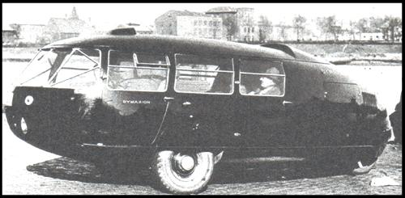
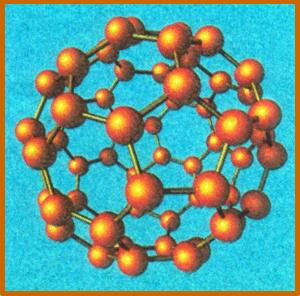

The Mind Behind The Dome
June/July 1999
In 1927, Buckminster Fuller, then 32, stood at the edge of a freezing Lake Michigan and resolved to throw himself into the water, thus ending a life he deemed "wasted." His young daughter had recently died, leaving him, his wife and remaining infant daughter in a world of grief and desperation. A college dropout and by most accounts thoroughly uncomfortable in his own skin, Fuller was unable to keep hold of a steady idea, much less a job that supplied even the basic necessities for his family. But as he stood and pondered the end of his young life, he was struck suddenly by the notion that the enemy crushing his spiri t and informing his death was actually his own ego, and that he would do better to commit "ego-cide" rather than suicide. He chose at that moment to think and work on behalf of all humanity, rejecting personal gain and aggrandizement in the process. "An experiment to discover what the little, penniless, unknown individual might be able to do effectively on behalf of all humanity" saved him from drowning and his family from renewed heartbreak.
Over the following
50 years, the "experiment" resulted in the following: 50 U.S. patents, 28 authored books, 47 honorary degrees in engineering and the humanities, the Presidential Medal of Freedom (the highest national honor that a private citizen can receive) and dozens of other awards. From an architectural standpoint alone, he may well be the greatest American thinker of the 20th century.
Coining a term that is now part of science's vocabulary, he found that a lack of "synergy," or interconnectedness, was apparent in the social and architectural systems of the day. Addressing the latter concern, he proposed a shelter that enclosed more space with fewer materials than any other. A dome composed of interlocking triangles would not only have the virtue of accomplishing this, but would also provide tremendous tensile strength and wind resistance. It took a commission from the U.S. Pavilion at Montreal's Expo'67 to convince the world of the aesthetic and structural integrity of the geodesic principle. Fuller describes the system himself:
"Let me be blunt, contractors are building houses the way they did 2,000 years ago. With traditional building, the pillars become the essential weapon in the fight against gravity. 'Dome-type' construction integrates the structure into a continuous surface. Curves are always stronger than planes. In conventional building the roof weighs so much, interior walls are needed to support it. The attic becomes a huge waste of space, material, and labor that you pay for.
"The triangle is the strongest structure known to man. You build a sphere from triangles you have a super structure."
And he dreamed on. Taking advantage of the fact that warmer air inside a dome provides lift, he proposed a gigantic geodesic covering all of Manhattan island. A dome over one-half mile in diameter would actually float with only a 1°F air temperature difference, so the structure would not only not require a foundation, it would have to be tethered to the ground.
The U.S. Marine Corps hailed the geodesic dome as "the first basic improvement in mobile military shelter in 2,600 years," and domes constructed of plastic and fiberglass have been withstanding 200 mph winds in the Arctic for over a decade.
Buckminster Fuller's life experiment ended in 1983, leaving a legacy of incalculable inspiration in its wake.
-Matt Scanlon
 Above: Buckminster Fuller in front of the U.S. Pavilion, a massive geodesic dome in Montreal, Canada. |
 Above: His 1934 Dymaxion car weighed less than 1,000 pounds and carried eight passengers at 120 mph. |
 Above: This geodesic-like molecule was dubbed""Fullerene"". |